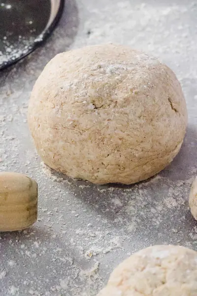

Low Calorie Pizza Crust

Ingredients
- 1 cup whole wheat self rising flour
- ½ cup low fat plain Greek yogurt
- ½ tsp salt
Steps
- Add all ingredients into a medium mixing bowl and mix to form a dough. Add up to ½ tablespoon of water to the mixture if a little dry.
- Turn out onto a lightly floured work space, counter, or cutting board and gently knead to bring the mixture together.
- Allow the dough to rest for 5 minutes before using.
- Roll dough on a lightly floured surface. Dough can be rolled into a 10 inch round and topped with your favorite pizza toppings before baking in the oven.
- To bake, once you have added toppings straight onto the uncooked, rolled out pizza base, bake the pizza in the oven at 390-400 degrees F for 15-20 minutes. If you want a crunchier crust, pre-bake the dough for 5-10 minutes at 390-400 degrees F for 10 minutes, then add the toppings and bake for an additional 8-15 minutes until all of the ingredients have cooked through.
Recipe by Anjali Shah · The Picky Eater, from The Picky Eater. Saved here for personal use; the original has the full notes, tips and photos. Open original